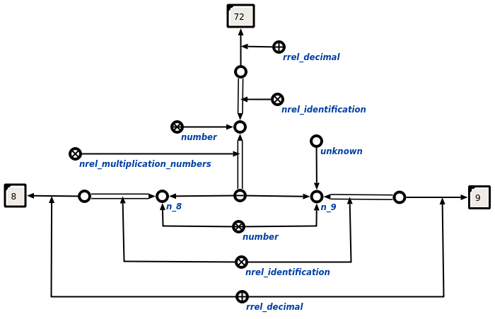

Задачей scp-программы произведения и деления величин и чисел является произведение и деление величин и чисел. Первым входным параметром данной scp-программы является связка отношения произведение чисел* или произведение величин*, вторым - множество, содержащее неизвестный параметр связки, уточнённый соответствующим атрибутом. В ходе выполнения программы явно указывается связь со следующими ключевыми узлами: порядковыми атрибутами 1' и 2', уточняющими множества, хранящие характеристики чисел и величин, отношениями идентификация* и значение*, участвующими в цепочках значений и идентификации для величин и чисел соответственно, атрибутами результат' и множитель', уточняющими элементы связки отношений произведение чисел* или произведение величин*, а также абсолютными понятиями число и величина. Ниже представлены результаты выполнения процедуры:
